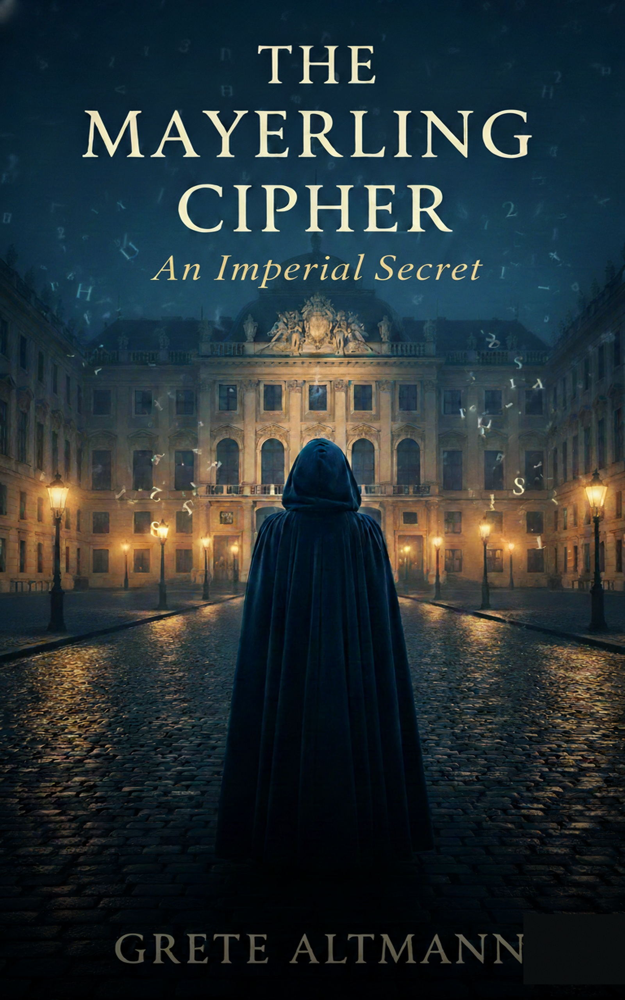

Vienna, 1889. A journalist. A dead prince.
A cipher that could topple an empire.
Crown Prince Rudolf is dead. The official story has changed three times today. First: a hunting accident. Then: heart failure. Now: a suicide pact with his seventeen-year-old mistress.
Marta Weiss is a Jewish investigative journalist at a paper that has told her, twice, to stop asking inconvenient questions. When an anonymous letter arrives at her desk — three words and a fragment of a ciphered Imperial document — she has every reason to burn it.
She doesn't.
What Marta uncovers with the help of a silenced Hungarian physician who examined the bodies is worse than murder. Mary Vetsera didn't die alongside the Crown Prince. She was already dead. Placed there. Used as the prop that made the official story possible.
In a city where antisemitism is rising and women who ask the wrong questions disappear without fanfare, Marta's only protection is to become impossible to silence.
For readers of Kate Quinn, Allison Pataki, and Fiona Davis
“A masterfully crafted debut that pulls you into the gaslit streets of imperial Vienna and refuses to let go.”— ARC Reader
“Marta Weiss is the kind of heroine historical fiction needs — fierce, flawed, and utterly unforgettable.”— ARC Reader
“If you loved The Alice Network, clear your schedule. The Mayerling Cipher is that good.”— ARC Reader
Grete Altmann writes atmospheric historical mysteries set in the twilight years of the Habsburg Empire. A former archivist with a doctorate in Central European cultural history, she developed her affinity for Vienna's layered political underworld while researching the fin-de-siècle press corps.
Her fiction dwells in the tension between what the official record preserves and what it deliberately buries — the women silenced, the documents destroyed, the truths rewritten by power. The Mayerling Cipher is her debut novel.
Influences: Arthur Schnitzler · Stefan Zweig · fin-de-siècle Viennese literature